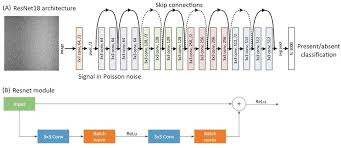
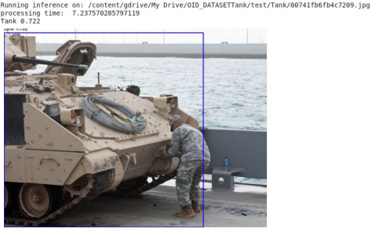

Part of 6 month internship at DRDO
Introduction
This project primarily focuses on ways to get better object detection using deep
neural networks, which will help in identifying the tanks and other armoured
vehicles across different weather conditions.
Objectives
To create a model where there is Pre-Processing of the image done to improve
features, these Pre-Processing are removal of fog, shadows and finding the
dominant color to create image from basic color palette and further after the
Preprocessing using the image to train the best convolutional neural network
which detects the different vehicles across the different images with high level of
confidence. While creating a model from scratch is not required only that
find the best existing model which has least losses and trains faster on images
Section 1 - Parsing Color Pallete Library
The parsing was done using python library, to get the following column fields there were 1800 values -
➔ Color URL
➔ Shade Code etc
Section 2 - Removal of Fog
This is a new method that is based on the acute observation of images in natural settings and
based on the observation the de-hazing of the image is done which leads to much better, clearer
images. It arrives from the point that most pictures which capture outdoor settings have
intensity value of at least one of RGB channels to be around zero, within the boundaries of the
local window being considered.
Section 3 - Deep Learning Model
Resnet Architecture Model was trained using google dataset

From the figure as shown above we can see the model is easily able to detect the
armoured vehicle shown in the image despite there being slight trace amount of
fog in input. The model is also able to classify the object belonging to Tank class
with a confidence score of 0.722 which is very much above the threshold of 50%
and it shows bounding box of blue color along the length of tank which is helpful
in cases the image is very big in length and width, also for documentation and
analyzing purposes.
The image takes about 7.2 seconds to process a high resolution image which is
much better than the time taken by conventional neural networks such as VGG16
etc.